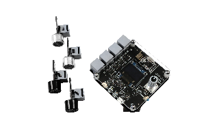
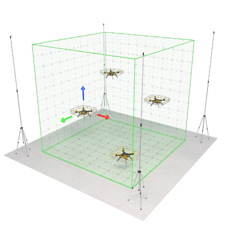
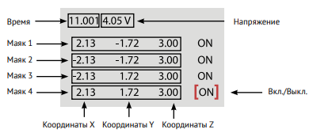
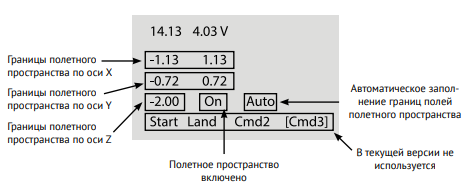

Система навигации в помещении Геоскан Локус¶
Система позволяет создать контролируемую полетную зону размером до 10х10х4 метров, в которой обеспечивает точное и безопасное управление квадрокоптером независимо от других систем навигации (GPS/ГЛОНАСС)
Скачать инструкцию по настройке системы навигации
Система включает в себя:
- блок управления;
- 4 ультразвуковых излучателя;
- бортовой модуль;
- соединительные провода;
- программу LPS для синхронизации с компьютером (скачать последнюю версию );
Установка полетной зоны¶
Вначале необходимо установить и подключить датчики в будущей зоне полета. Излучатели нужно расположить в вершинах полетной зоны так, чтобы их рабочие поверхности были обращены к ее центру. При этом следует соблюдать следущие условия:
- минимальная высота установки излучателей - 2 м
- минимальная дистанция между излучателями - 3 м
Далее комплектыми проводами каждый датчик соединяется с блоком управления через соответствующий разъем. Блок управления при этом нужно расположить за пределами полетной зоны. Блок управления, в свою очередь, соединяется комплектным проводом с компьютером через порт USB.
Взаимодействие между блоком управления и бортовым модулем осуществляется по радиоканалу. Необходимо измерить расстояния между излучателями и высоту их установки. Удобнее всего задавать полетную зону в форме квадрата или прямоугольника. Результаты измерений позволяют сформировать координатную сетку полетной зоны.

На рисунке показан интерфейс программы LPS, которая используется при настройке и работе с системой позиционирования. При первом запуске программы поля координат маяков пусты, их необходимо заполнить:
- Расстояние (в метрах) между излучателем 1 и 2 делится на 2. Полученное значение вводится в поле X со знаком "минус" для маяков №2 и №3 и без знака "минус" для маяка №1 и 4.
- Расстояние между излучателем 2 и 3 также делится на 2 и значение вводится в поле Y со знаком "минус" для маяков №3 и №4 и без знака "минус" для маяков №1 и №2.
- В поле Z вводится высота каждого датчика над уровнем пола.
После ввода координат полетная зона сформирована и отображается в правом окне программы зеленой линией. По умолчанию углы полетной зоны отстоят от датчиков на 1 м.
Note
Параметры полетной зоны также могут быть заданы напрямую на блоке управления
Включение блока производится однократным нажатием на кнопку рядом с поворотным селектором. При включении должен загореться белый светодиод "питание" и зеленый "статус". Если этого не произошло, проверьте заряд аккумулятора.
В верхней части встроенного экрана отображается время с момента включения и текущий уровень напряжения на аккумуляторе. При падении напряжения ниже 3 В начнет мигать светодиод "статус", сообщая о необходимости подзаряда. Для этого достаточно подключить плату через порт micro-usb к компьютеру или зарядому устройству (output 5В 2А)
Отображение координат на экране блока управления аналогично интерфейсу программы LPS
Выбрав нужный пункт меню поворотом селектора, нажмите на селектор для внесения изменений (также поворотом селектора) и нажмите второй раз, чтобы подтвердить изменения и вернуться в меню.
Перейдя на второй экран меню, можно настроить отступы от границы полетного пространства вручную или включить режим "Auto" для автоматической настройки. Также есть возможность отключать ограничения полетной зоны.
Note
Для работы системы позиционирования подключение к компьютеру необязательно. Достаточно включить блок управления и расположить "Пионер" с установенным бортовым модулем в пределах полетной зоны.